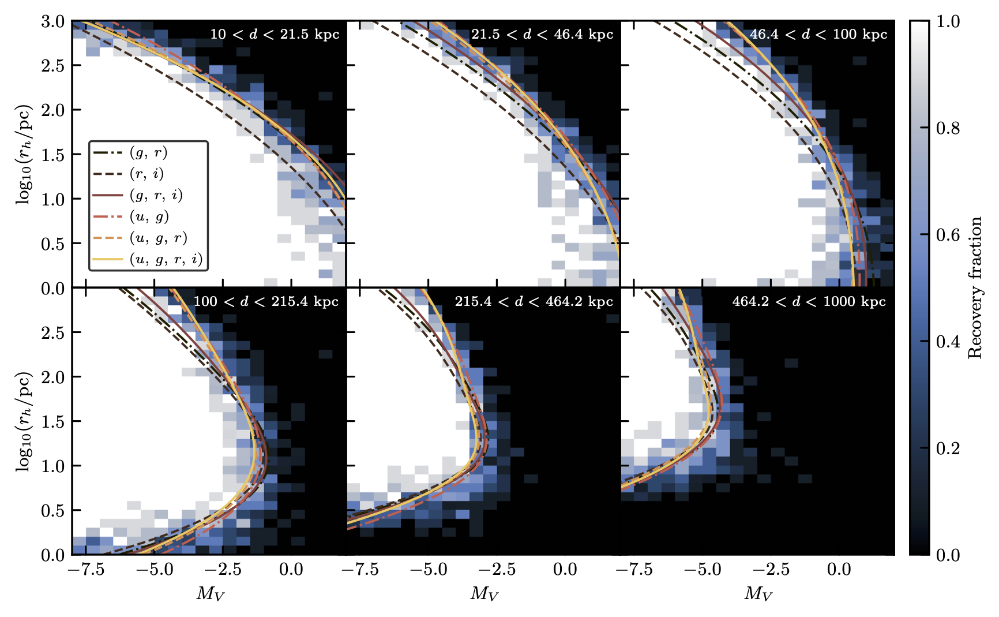

Systematic searches for ultra-faint Milky Way satellite galaxies essentially consist of local density estimators coupled with colour-magnitude cuts following stellar isochrone tracks. These selections are typically performed in 2D colour-magnitude spaces and have rarely, if ever, been extended to higher-dimensional spaces. Moreover, these studies typically only consider g-, r-, and i-band photometry, disregarding the use of the shallower but metal-sensitive u band.
We generated dwarf galaxies and injected them into the LSST DC2 simulation. We then tried to recover them using erose for different combinations of photometric bands. We found that including the u band or combining the gri bands (into a 3D space) both have a slight, but positive impact on the final recovery fractions, especially for the most extended objects for the former.
This is shown in the plot below which can be understood as follows: each pixel of the first panel contains ten dwarf galaxies of different absolute magnitudes ($M_V$) and half-light radius ($r_h$). At the bottom left (low $M_V$, low $r_h$), objects are dense and bright whereas at the top right (high $M_V$, high $r_h$), they are extended and faint. The colours of the pixels correspond to the fraction of the ten dwarf galaxies that have been recovered while the different panels represent different distance shifts. The different coloured lines represent the 50% recovery fractions for the different photometric configuration (the more shifted to the right the better, as fainter galaxies can be probed). As previously stated, configurations including the u band provide slightly better results, especially for the most extended objects ($\log_{10}(r_h/\textrm{pc}) \gtrsim 2$). The configuration including the gri bands slightly outperforms the configuration only including gr.

The background 2D histograms have been fitted with 2D sigmoids following the method described in the appendix of the paper. If you are curious to know if your favourite dwarf galaxy will be observable with LSST (which it probability will if inside the footprint), you can use the detection probability calculator.
Another way to interpret those results is to estimate the number of satellites that will be recovered by LSST. We generated 10 000 mock Milky Way satellite populations (generated from the empirical model of Tan et al. 2026) which we integrated under our observational selection functions. We found that configurations including ug recover 64.1$^{+6.3}_{-6.0}$% of injected satellites, against 62.5$^{+6.6}_{-6.5}$% for gr and 63.5$^{+6.4}_{-6.5}$% for gri. Although this difference is not statistically significant, it suggests that the u band, and the inclusion of more photometric bands can both provide additional information and may slightly improve recovery performances.